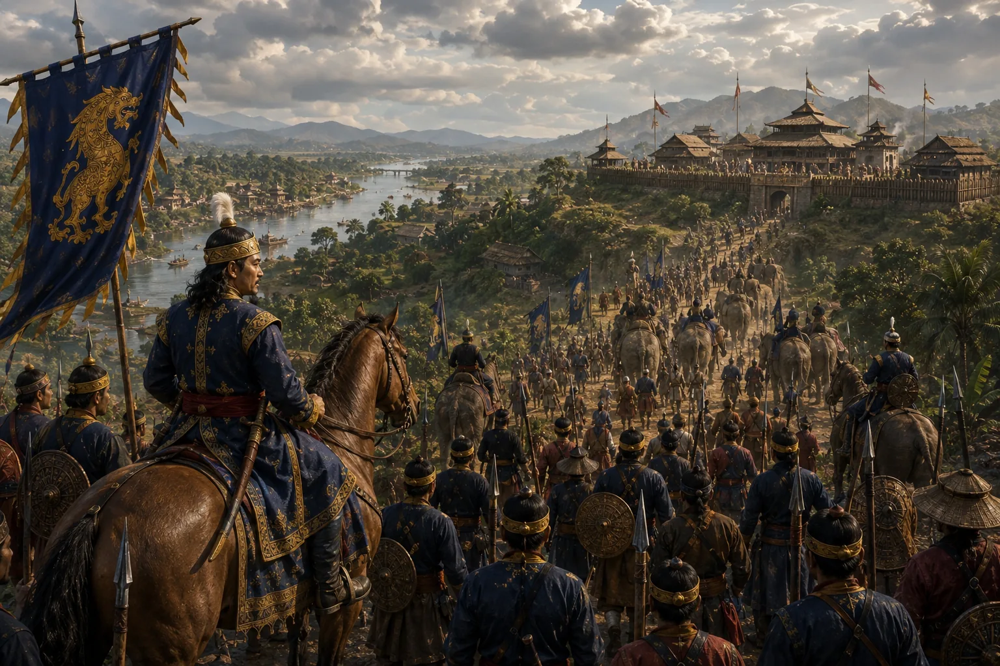

Ahom Vanguard Marches Against the Chutia Kingdom
1520 · Swarganarayan’s kingdom

Suhungmung marches an immense land and naval force up the Brahmaputra to confront Chutia monarch Dhirnarayan.
Sources have not yet been catalogued for this record.
People: Suhungmung (Swarganarayan)